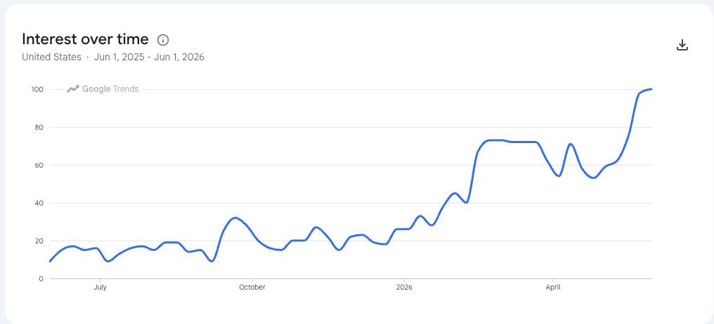

About This Book¶
Welcome, builders!
 I'm Sage, and this book is about building a desk companion that listens, shows what it heard, and talks back. You'll write every line of code that runs on it, from the microphone to the round screen to the network link. When you're done, it's yours — your buddy, your rules, your data. Let's listen closely!
I'm Sage, and this book is about building a desk companion that listens, shows what it heard, and talks back. You'll write every line of code that runs on it, from the microphone to the round screen to the network link. When you're done, it's yours — your buddy, your rules, your data. Let's listen closely!
Open Study Buddy is a free, open textbook for building a low-cost personal AI agent device from a Raspberry Pi Pico 2 W, a 2.1-inch round color display, a digital microphone, a speaker amplifier, and three buttons. Students write the MicroPython that runs it. Schools set up the agent behind it, decide which data it may touch, and give it their own mascot and calendar.
Why Now¶
Five years ago this device could not have been built for the price of a pizza dinner. Today it can. The sections below explain what changed — the demand side (students want fun projects, and the world wants personal agents) and the supply side (displays, audio parts, and microcontroller DSP all crossed a price and performance line at the same time).
We Need Fun Coding Projects¶
Most students do not quit programming because loops are hard. They quit because the projects are boring: print a times table, sort a list, guess a number. The projects that keep students coming back share three traits:
- Hands-on. The code makes something happen in the physical world — a screen lights up, a speaker answers, a button changes the mode. Mistakes are visible and fixes are satisfying.
- Personal. The student owns the result. It wears their school's mascot, shows their test dates, answers to their wake phrase, and sits on their desk after the class ends.
- Affordable. The whole kit has to cost under $30, so a club can buy one per student, a parent can say yes without a second thought, and a broken part is a shrug instead of a crisis.
The Study Buddy base kit hits all three. At single-unit prices the parts come to about $28, and a classroom order of 20 drops to about $21 per student (see the Purchasing Guide for every part, price, and search link). That is less than one month of most commercial personal-agent subscriptions.
The Rise of Personal Agents¶
A personal agent is AI software that does multi-step work on your behalf — checking a calendar, summarizing what is due, and coming back when it needs a decision. In the twelve months from June 2025 to June 2026, U.S. Google search interest in "personal AI agents" grew more than tenfold, from an index of about 9 to the maximum of 1001.

Google Trends, "Personal AI Agents," United States, June 1, 2025 – June 1, 2026. Source: Personal Agent Software appendix, AI for EE Research.
The products driving that curve — Google's Gemini Spark, Meta's Muse, OpenAI's Dots, SpaceXAI's Grok Bot, and Anthropic's Claude Cowork — all launched or reached general availability within about six months of each other in 20261. Nearly all of them run on a vendor's cloud computer and bill a monthly subscription, and none of them shows students how an agent actually works.
Open Study Buddy takes the opposite approach. The device is fully open, the agent behind it is chosen and configured by the student, class, or school, and every byte that leaves the device is a byte the student wrote code to send. Students learn the most important technology trend of their generation by building a small, honest version of it.
Lower Display Costs¶
A personal agent needs a face. The kit uses a 2.1-inch, 360 × 360 round color display with the GC9B72 controller — the same class of panel found in smartwatches. Single displays sell on AliExpress for about $5.39–$6.12, or under $7 delivered2. A display this large and this sharp used to cost more than the rest of the kit combined.
For school purchasing, see this book's Purchasing Guide and the Coding Club textbook's Study Buddy Kit page and Chapter 22: Purchasing and Configuring Club Devices3.
Efficient Sound Processing¶
Listening and speaking are hard work for a microcontroller: audio arrives as a
continuous stream of samples that must never be dropped. Current MicroPython
releases include machine.I2S, and on the Raspberry Pi Pico the RP2 port drives
the I2S bus with PIO (programmable I/O) state machines and moves every sample
with DMA (direct memory access) running in the background45.
That means the bit clock, word select, and data shifting for both the microphone and the speaker run on dedicated hardware, not on the CPU. The Pico 2 W's processor only touches the audio after a whole buffer is full, which leaves it free to run the FFT, update the display, and talk to the network. The RP2350 has three PIO blocks with twelve state machines in total, so the two audio streams use only a fraction of what is available.
DSP Functions on a $7 Microcontroller¶
The RP2350 chip on the Pico 2 W has a hardware floating-point unit and ARM DSP instructions. The companion FFT Benchmarking project used them to build a hand-written assembly FFT that MicroPython can call directly. On a Pico 2 at 150 MHz it computes a 512-bin FFT in about 620 microseconds (621.7 µs mean, best of 15 trials) — about 289 times faster than the same transform in pure interpreted MicroPython, and about 5 times faster than the published MicroPython assembly FFT for the same board67.
The Study Buddy reads audio in 40 ms frames of 512 samples. An FFT that finishes in about 0.62 ms uses under 2% of each frame, leaving the rest of the time budget for volume meters, spectrum displays, and wake-word matching — all on a board that costs $6.992.
High-Quality MEMS Microphone¶
The kit's ear is the INMP441, an omnidirectional MEMS microphone with a built-in analog-to-digital converter that sends 24-bit samples straight out over I2S. Its datasheet specifies a 61 dBA signal-to-noise ratio and a flat response from 60 Hz to 15 kHz, which covers the human voice with room to spare8. Breakout boards sell for about $1–$32.
The INMP441 has become the default microphone for hobbyist voice projects: it is the part most often wired into ESP32 and Pico voice assistants, wake-word detectors, and sound-level loggers, and electronics component libraries carry many ready-made example circuits for it9. Because it outputs digital audio, students never fight with analog noise, gain stages, or ADC calibration before they hear their first clean recording.
High-Quality Sound Amplifier¶
The kit's voice is the MAX98357A, a mono Class D amplifier from Analog Devices (formerly Maxim Integrated) that takes digital I2S audio in and drives a speaker directly. It delivers up to 3.2 W into a 4 Ω speaker, needs no output filter and no master clock, and accepts sample rates from 8 kHz to 96 kHz10. Class D designs like this one run at roughly 90% efficiency, so the amplifier stays cool on USB power11.
Breakout boards cost about $1–$2 on AliExpress2. For the price of a candy bar, students get a clean digital audio path from their code to the speaker, with no analog circuitry to tune.
The Growth of Smart Clocks that Use Wi-Fi¶
Placeholder — data to be added
This section will show the growth in U.S. search interest in "WiFi Clock" over the last year. Until the chart is added, view the live data in Google Trends: "WIFI Clock," United States, past 12 months.
A Wi-Fi clock is the gateway project to a personal agent. It already has the round display, the network connection, and the habit of sitting on a desk and being glanced at all day. The Open Study Buddy grows directly out of the Clocks and Watches textbook and its Chrono Smart Clock kit, which uses the same round display. Students who have built a smart clock already own most of the hardware; adding a microphone, an amplifier, and a speaker turns the clock into a buddy.
The Time Is Now!¶
Every piece of this project crossed a line in the same short window: demand for personal agents exploded, smartwatch displays fell under $7, MicroPython's I2S support moved audio onto PIO hardware, a $7 microcontroller learned to run a 512-bin FFT in well under a millisecond, and studio-quality digital microphones and amplifiers dropped to a couple of dollars each. Put together, they make a hands-on, personal, fully open AI device that a student can build for under $30.
The time is now!
How to Use This Book¶
Each chapter builds on the previous one and ends with a working device feature, so reading in order is recommended. The book includes:
- 18 chapters covering personal agents, MicroPython review, digital audio, the kit hardware, the round display, buttons and device modes, I2S audio, the FFT, high-performance MicroPython, push-to-talk, wake words, Wi-Fi and HTTP, MQTT alerts, the school agent and calendar, privacy, and capstone projects
- More than 40 interactive MicroSims — browser-based simulations you can manipulate to explore a concept before you code it
- A glossary of 326 terms
- A learning graph of 326 concepts showing how every idea depends on the ones before it
- School pages showing how a school customizes its own buddy
- A Teacher's Guide with a full purchasing guide for classroom orders
The Learning Graph shows how concepts connect across chapters. Start there if you want to explore out of order or check the prerequisites for a topic.
About the Author¶
Dan McCreary is a semi-retired AI researcher, solution architect, and educator who has spent more than three decades helping Fortune 100 organizations reason over massive datasets. At Optum he founded the Generative AI Center of Excellence and led the team that built one of the world's largest healthcare knowledge graphs — spanning over 25 billion vertices — to unify member, provider, and patient insights. His background in knowledge representation and systems thinking underpins the learning graphs and intelligent-textbook workflows used throughout this course.
He is the co-author of Making Sense of NoSQL (Manning Publications), the founding chair of the NoSQL Now! conference, and a frequent keynote speaker on semantic search, ontology strategy, and AI hardware. Dan has mentored students as a STEM volunteer since 2014 and runs coding clubs built around low-cost MicroPython kits. You can visit the Intelligent Textbooks Case Studies to see the textbooks Dan has created or co-created with other authors.
Selected Credentials
- B.A. in Physics and Computer Science from Carleton College
- M.S.E.E. from the University of Minnesota
- MBA coursework at the University of St. Thomas
- Patent holder in semantic search and ontology management techniques
- Advocate for large-scale Enterprise Knowledge Graph adoption across healthcare and education
- Long-time promoter of accessible, low-cost AI-powered learning experiences
How to Cite This Book¶
If you reference this textbook in academic work, curriculum proposals, lesson plans, or grant applications, please use one of the following formats.
APA (7th edition)
McCreary, D. (2026). Open Study Buddy. https://dmccreary.github.io/open-study-buddy/
Chicago (17th edition)
McCreary, Dan. 2026. Open Study Buddy. https://dmccreary.github.io/open-study-buddy/.
MLA (9th edition)
McCreary, Dan. Open Study Buddy. 2026, dmccreary.github.io/open-study-buddy/.
BibTeX
@book{mccreary2026openstudybuddy,
title = {Open Study Buddy},
author = {McCreary, Dan},
year = {2026},
url = {https://dmccreary.github.io/open-study-buddy/},
note = {Interactive intelligent textbook}
}
To cite a specific chapter, add the chapter number and title — for example:
McCreary, D. (2026). Chapter 1: Personal Agents and the Open Study Buddy Architecture. In Open Study Buddy. https://dmccreary.github.io/open-study-buddy/chapters/01-personal-agents-architecture/
License¶
This work is released under the Creative Commons Attribution-NonCommercial-ShareAlike 4.0 International License (CC BY-NC-SA 4.0). You are free to share and adapt the material for non-commercial purposes as long as you give appropriate credit and share your adaptations under the same license.
References¶
-
McCreary, D. (2026). Appendix: Personal Agent Software (includes the Google Trends chart for "Personal AI Agents," June 1, 2025 – June 1, 2026). AI for EE Research. https://dmccreary.github.io/ai-for-ee-research/appendices/personal-agent-software/ ↩↩
-
McCreary, D. (2026). Purchasing Guide (prices checked October 20, 2026). Open Study Buddy Teacher's Guide. https://dmccreary.github.io/open-study-buddy/learning-graph/teachers-guide/#purchasing-guide ↩↩↩↩
-
McCreary, D. (2026). Study Buddy Kit and Chapter 22: Purchasing and Configuring Club Devices. Coding Club. https://dmccreary.github.io/coding-club/kits/study-buddy/ ↩
-
MicroPython. class I2S – Inter-IC Sound bus protocol. MicroPython documentation. https://docs.micropython.org/en/latest/library/machine.I2S.html ↩
-
MicroPython.
ports/rp2/machine_i2s.c— "The PIO is used to drive the I2S bus signals" with non-blocking DMA transfers. https://github.com/micropython/micropython/blob/master/ports/rp2/machine_i2s.c ↩ -
McCreary, D. (2026). Appendix: How Our 512-Point Assembly FFT Compares to Published Libraries. FFT Benchmarking. https://dmccreary.github.io/fft-benchmarking/appendices/benchmark-comparison/ ↩
-
Hinch, P. micropython-fourier. GitHub. https://github.com/peterhinch/micropython-fourier ↩
-
TDK InvenSense. INMP441 Omnidirectional Microphone with Bottom Port and I2S Digital Output (datasheet). https://invensense.tdk.com/products/digital/inmp441/ ↩
-
Cirkit Designer. INMP441 Microphone (component page with example projects). https://docs.cirkitdesigner.com/component/3c3f5670-82f7-4ecc-9dc1-bcd3eb8732bf/inmp441-microphone ↩
-
Analog Devices. MAX98357A/MAX98357B: Tiny, Low-Cost, PCM Class D Amplifier with Class AB Performance (datasheet). https://www.analog.com/en/products/max98357a.html ↩
-
Soldered Electronics. I2S Audio Amplifier — How It Works (MAX98357A, 92% efficiency at 3.2 W into 4 Ω). https://docs.soldered.com/i2s-audio-amplifier/how-it-works/ ↩